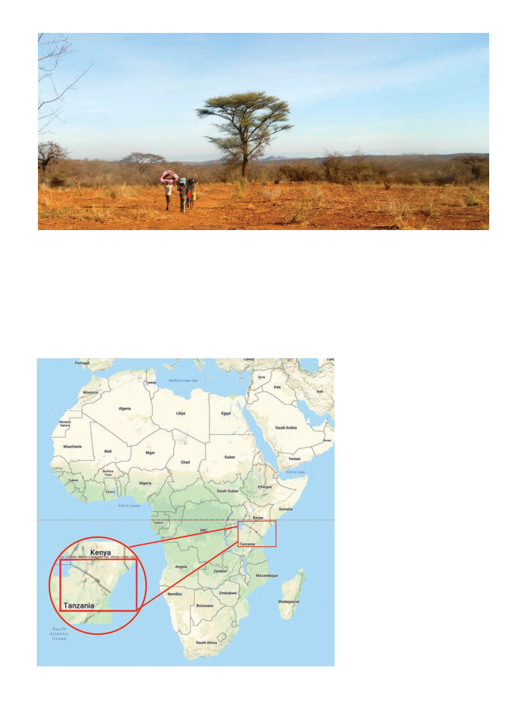

January 2021
95
O
ctober 14, 2015 – Six of us
trudge in a line across a rugged
trackless landscape of thorn
trees and acacias, dry washes and
small hills. Our guide, equipped with a
bow and arrows, picks his way across
familiar terrain with no semblance of
a trail. Second in line is the chief of the
band of Hadzabe hunter-gatherers,
followed by myself and my diminu-
tive translator Neema. Behind us three
young Hadzabe boys have been depu-
tized to help carry supplies. They carry
the materials — two mattresses, ten
bee suits, and a case of bottled water —
in the African fashion, on their heads,
making the procession look particular-
ly like a trail of ants. Occasionally we
pass a kraal belonging to members of
the Sukuma tribe — a cluster of huts
surrounded by a circular barrier of
thorn branches. Competitors for land
with the Hadzabe, a few Sukuma men
in their patterned robes eye us warily
as we pass. We’re hours of walking
from where the government land-
cruiser dropped us off, much farther
from where we could get another ride.
The government officials said they’d
come back for us in a week, but I think
anxiously about how dependable I’ve
found local government functionaries
in Africa.
I’ve come a long way. Not just phys-
ically, but the entire journey from the
suburbs of Orange County, California,
to the hinterland of Tanzania. Here I
am, traveling on foot through the
roadless homeland of the Hadzabe,
one of the last hunter-gatherer peo-
ples, and this hasn’t been organized
by any other organization; somehow
I got myself here myself.
August 2, 2011 — I was driving
Jerry Hayes, then of the long-running
The Classroom section of American
Bee Journal (now editor of Bee Cul-
ture), back to his hotel after he had
guest spoken for the Orange County
Beekeepers Association. As we drove
down the bland boulevards near the
airport I mentioned that I’d really
been inspired by articles in ABJ about
beekeeping projects abroad. In par-
ticular, just the previous month there
had been an article about beekeep-
ing in Nagaland, India, by Alaskan
beekeeper Stephen Petersen. I had
actually emailed Stephen asking if he
needed an assistant, but he did not.
Jerry gave me the names of numerous
organizations that put on such proj-
ects and encouraged me to apply to
them. I promptly did so, and within
a year I was stepping out into the hu-
mid evening air of Nigeria on a proj-
ect with Winrock International.
My first morning in Africa, I was
afraid to even venture out of the hotel.
Tanzania: Bringing Beekeeping
to Hunter-gatherers
by KRIS FRICKE